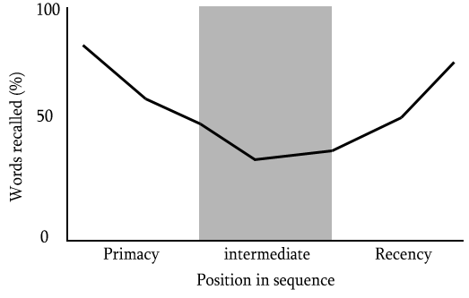

If you want to ace your AP Psychology exam, simply staring at your textbook won't work. The human brain doesn't just passively absorb information; it actively processes, organizes, and decides what is worth keeping and what should be thrown away. Encoding involves the specific strategies and processes we use to get information into our memory. The better and more organized your encoding strategies are, the more effectively that information will be stored and retrieved later. Let's look at the scientific "hacks" you can use to force your brain to remember.
Your short-term memory is incredibly limited, holding only about seven items at a time. To bypass this limit, your brain needs to organize raw data into meaningful structures.
Mnemonic Devices are memory aids that help you organize information in a quirky, meaningful, or highly visual way. You've probably used acronyms like ROY G. BIV (for the colors of the rainbow) or rhymes like "In 1492, Columbus sailed the ocean blue."
One of the oldest and most powerful mnemonic devices is the Method of Loci (also known as a Memory Palace). This technique involves associating the information you need to memorize with specific physical locations in a familiar place. If you need to memorize a grocery list, you might mentally picture a giant gallon of milk blocking your front door, a loaf of bread sleeping on your couch, and a carton of eggs sitting on your kitchen counter. During the test, you just mentally "walk" through your house to retrieve the items!
How you space out your studying actually changes how your brain physically stores the memory.
Psychologists have proven that distributed practice leads to significantly better long-term retention—a phenomenon known as the Spacing Effect. Why does this work? Because it gives your brain time for Memory Consolidation. Consolidation is the biological process of stabilizing and strengthening a memory trace, transferring it securely into long-term storage. A massive part of consolidation happens while you sleep. If you pull an all-nighter to cram (massed practice), you are actively depriving your brain of the sleep it needs to consolidate those memories!
Encoding is also heavily affected by the order in which information is presented to you. Imagine your friend verbally gives you a 15-item grocery list, but you don't have a pen to write it down. By the time you get to the store, which items will you remember?
The Serial Position Effect predicts that you will easily remember the items at the beginning and the end of the list, but you will completely forget the stuff in the middle. This happens for two distinct reasons:

The Serial Position Effect: Mastering Primacy and Recency. This infographic provides a visual breakdown of why we remember items at the beginning (Primacy Effect) and end (Recency Effect) of a list but struggle with the middle, perfectly mapping long-term and working memory performance. Use this map to guide your retrieval practice!
⚠️ Distributed Practice vs. Spacing Effect: These are often confused! Distributed Practice is the action or strategy you choose to do (studying a little bit every day). The Spacing Effect is the psychological outcome (the fact that you actually remembered the information better on test day because of your strategy).
⚠️ Primacy vs. Recency: Don't just know where they occur on a list; know why they occur. Primacy works because of rehearsal (long-term memory). Recency works because the info is still fresh in your working memory.
Ensure these fundamental memory concepts are locked in by practicing with our review tools: